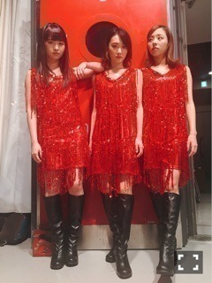
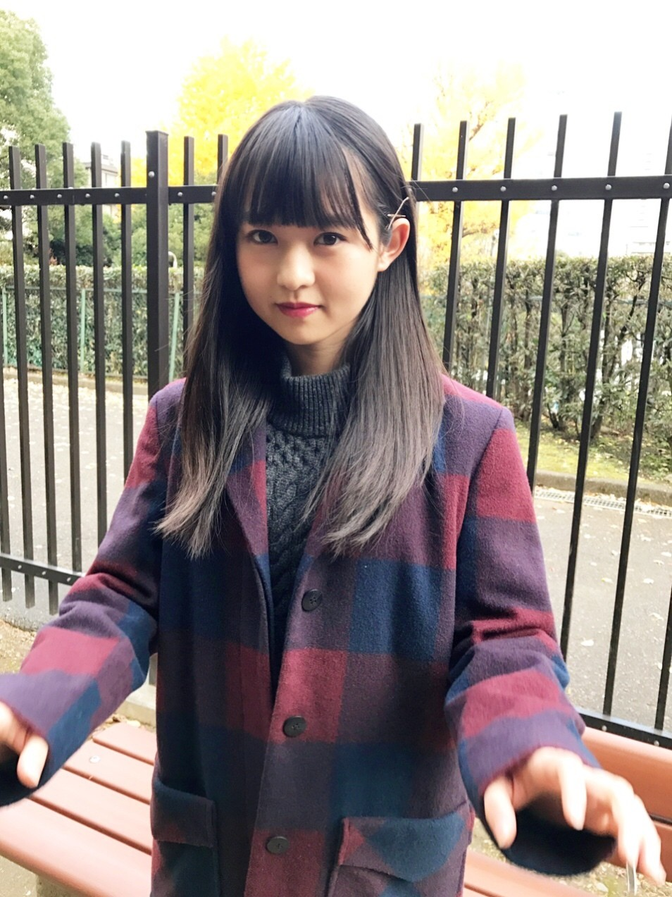
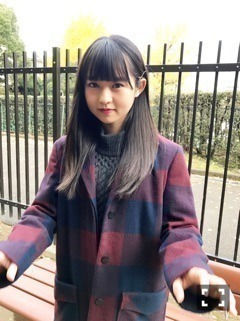
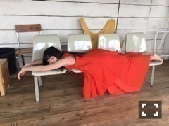

| 2016/12 27 Tue | 伊藤万理華 時空を超えて。754回目 |
NOGIBINGO!7最終回で
95年組ユニットで歌いました。
S.O.S！3人なのに！

7はわがままも聞いていただき、、
いろんな挑戦ができて
非常に有り難かったです。
まりっか人形、監督、ユニット、、
楽しかった〜

minne×装苑
クリエイターズコラボ作品発表〜
選考の結果、募集テーマにぴったりハマった
Riricoさんの作品
「光と石達のキラキラネックレス」
とコラボしました！
たくさんの石とスイッチを入れると
チカチカ光る仕掛け。惚れ惚れ〜
占い師でもあるRiricoさんに
来年の運勢を占ってもらいました。
↓↓↓
伊藤万理華さんは、元々色々なアイデアが
浮かび、他の人が考えないような事を
直ぐに思いつくタイプです。
来年は、ご自身の気持ちが揺れる事も
あるかと思いますが、自分の考えを信じて、
焦らずゆっくり物事を進めていけば、
更なる成功に必ずつながります。
伊藤万理華さんの星回りを見ると
24歳頃に良い転機が訪れるようなので、
これからも頑張って下さい。
ですって！！！
24歳を楽しみに頑張ります。
ありがとうございました∠( 'ω')／

作品をディレクションしてくださったのは
宇宙支店以来の中里さん、
カメラマンはお馴染みの三宅さん、
ヘアメイクははじめましての白石さん、
素敵なスタッフさんと撮影しました。
作品についてや占い師というところから
様々なインスピレーションを受けて
こちらの作品が完成されました。
光、宇宙、交信、煙たい、哀しい
時空を超えた遠くにいる人を想う、顔。
のりぴーエレガンス論をもっと聞きたい。
彼女の行動力発信発想は
やっぱり面白い楽しい最高！です！！
また一緒にできて嬉しかった〜〜
テーマ、募集、審査、作品撮り、、
半年がかりの企画に参加できて有難い。
選考作品を見て改めて、
つくること、表現すること、
それぞれの発想と工夫に刺激を受けた！
応募してくださった皆様
ありがとうございました。
年末。みなさん、いかがお過ごしですか？
今日は今年最後の個人仕事の日でした〜
難しくて勉強になった
完成が楽しみなやーつ！
あとはだらだらしながらも、
来年どうするか計画を立てています。
今年の失敗を来年に
持ち越さないようにしなきゃとか
部屋を綺麗にしなきゃとか
切り替えなきゃとか覚悟とかいろいろです。

↑年末の家での過ごし方(井上家の場合)
まりか